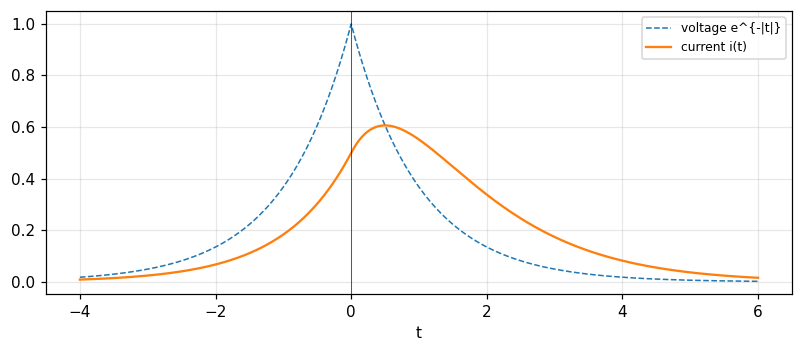

The Laplace transform: strips of convergence, transient response, initial-value problems
The two-sided and one-sided Laplace transforms, strips of convergence, theorems, transform pairs, transfer function and impulse response, natural behaviour, initial-value problems, switching problems and the inversion formula (Bracewell, chapter 14).
Lecture (slides) Hands-on with the Jupyter Notebook Self-check quiz
Lecture (slides)
The Laplace transform: strips of convergence, transient response, initial-value problems
- Define the two-sided, one-sided (0^+) and p-multiplied Laplace transforms; find the strip of convergence \alpha<\mathrm{Re}\,p<\beta.
- Use the table of Laplace theorems and pairs (shift, modulation, differentiation, integration, convolution) together with the strips of convergence.
- Solve transient problems by the subsidiary equation, transfer function and impulse response; find natural behaviour from the characteristic equation, including repeated roots.
- Solve initial-value problems by injecting the initial conditions as impulses in the driving function, and switching problems.
- Understand the inversion formula (the Bromwich contour), that the same F(p) corresponds to several functions depending on the strip, and Laplace against Fourier.
Use the buttons, the dots or the ← → keys to move between slides.
Definition and strips of convergence
- The forms of the definition
- The strip of convergence
- Theorems with strips
From Fourier to Laplace
Now t is still real but p is a complex variable, and we consider \int_{-\infty}^\infty f(t)e^{-pt}dt: the (two-sided) Laplace transform of f(t). It differs from the Fourier transform merely in notation; when the real part of p is zero the identity is complete, but there is a profound difference in application (Bracewell, p. 380). Alternative definitions: the one-sided \int_0^\infty f(t)e^{-pt}dt, arising in transient analysis where f(t) comes into existence after the throwing of a switch at t=0; if we deem f=0 for t<0 it is included in the two-sided definition. The lower limit is really 0^+: \int_0^\infty f\,e^{-pt}dt means \lim_{\epsilon\to0}\int_\epsilon^\infty; and the p-multiplied form p\int f e^{-pt}dt.
The p-multiplied form and operational notation
Many writers adopted the p-multiplied form for continuity with Heaviside's operational notation, whose early success with the differential equations of electrical transients stimulated long-continuing development. The admittance operator Y(p), with p interpreted as the time-derivative operator, turns out to be the p-multiplied Laplace transform of the response to a unit voltage step. The p-multiplied form is dying out so the connection with much electrotechnical literature has been disturbed; by omitting the p one gets exact correspondence with Fourier and can deal in terms of the impulse response instead of the step response. In the relation i(t)=Y(p)v(t), Y(p) proves to be the not-p-multiplied two-sided Laplace transform of the response to a unit voltage impulse (Bracewell, p. 381).
The Bromwich inversion formula
It has the sort of symmetry of the inverse Fourier transformation, but p is complex so a contour of integration in the complex plane must be specified: f(t)=\dfrac1{2\pi i}\int_{c-i\infty}^{c+i\infty}F_L(p)e^{pt}dp with c within the strip of convergence (Bracewell, p. 381). Measured with F_L=1/(p+1)^2 and c=0.5 at t=2: the numerical integral gives 0.2707 while te^{-t} = 0.2707. The often-quoted advantages of Laplace over Fourier are for transients; but the essential advantage of Fourier is its physical interpretability, as a spectrum or a diffraction pattern; once we take Laplace transforms of an equation we retain only a mathematical, not a physical, grasp of its meaning.
The strip of convergence
Multiply f(t) by e^{-pt} and integrate. For real p, at p=0 the product is f and the area is the integral of f. As p goes negative, e^{-pt} is an ever-larger factor multiplying f at t>0: there is a limit \alpha which p must exceed if the integral is to stay finite. Likewise with positive p the area may become infinite on the left, setting a limit \beta. For complex p only the real part counts. So the Laplace transform does not exist for all p but only for \alpha<\mathrm{Re}\,p<\beta: a strip in the p-plane (Fig. 14.2), not necessarily containing the imaginary axis, and possibly empty (Bracewell, pp. 382 to 383).
Examples: a strip, a line and no strip
e^{-t}H(t): the right side converges if \mathrm{Re}\,p>-1 and there is no limit \beta (since it is zero on the left): the strip \mathrm{Re}\,p>-1, F_L=1/(p+1); at p=0.5 the numerical integral 0.6667 and the formula 0.6667. e^{-|t|}: the strip -1<\mathrm{Re}\,p<1, F_L=2/(1-p^2); at p=0.5: 2.6667. e^{-t}H(t) at p=-1.5 (outside the strip) diverges: the integral up to T=10 is 294.8 and up to T=20 is 44050.9, exploding. \exp[tH(t)] needs \mathrm{Re}\,p<0 for the left part but \mathrm{Re}\,p>1 for the right, so there is no strip at all. e^{it} converges only (in a generalised sense) on the line \mathrm{Re}\,p=0: the strip has contracted to a line (p. 383).
What sets the limits \alpha,\beta
The left limit \alpha is determined by the right-hand part of f(t): the more rapidly f dies away with increasing t, the further left \alpha may be; if f falls to zero and remains zero, or diminishes as \exp(-t^2), then \alpha\to-\infty. Similarly the right limit \beta depends on the left half of f: receding to +\infty if f=0 to the left of some point (Bracewell, p. 383, Fig. 14.3). So a right-sided (causal) function f(t)H(t) has a strip \mathrm{Re}\,p>\alpha open to the right; a left-sided function has \mathrm{Re}\,p<\beta open to the left; a two-sided function has a strip bounded at both ends. Measured: e^{-t^2} converges for every real p: at p=5 the two-sided integral 918.15 matches \sqrt\pi\,e^{p^2/4} = 918.15.
Laplace theorems with strips of convergence
| Theorem | f(t) | F_L(p) |
|---|---|---|
| Similarity | f(at) | \tfrac1{|a|}F(p/a) |
| Shift | f(t-\tau) | e^{-p\tau}F(p) |
| Modulation | e^{-\sigma t}f(t) | F(p+\sigma) |
| Convolution | f_1*f_2 | F_1F_2 |
| Autocorrelation | f\star f | F(p)F(-p) |
| Differentiation | f'(t) | pF(p) |
| Integration | \int_{-\infty}^tf | F(p)/p |
| Finite difference | f(t+\tfrac\tau2)-f(t-\tfrac\tau2) | 2\sinh\tfrac{p\tau}2\,F |
| Reversal | f(-t) | F(-p) |
(Table 14.1, p. 385; each row also carries a strip of convergence, e.g. addition: the intersection of the strips; shift: the same strip; reversal: -\beta<\mathrm{Re}\,p<-\alpha.) With f=e^{-t}H(t), F=1/(p+1), p=0.5: similarity a=2 gives 0.4; shift \tau=0.7 gives 0.4698; modulation \sigma=1 with \cos2t gives 0.24; differentiation gives 0.3333 (p/(p+1)); integration 1.3333; convolution f*f=te^{-t} gives 0.4444; autocorrelation F(p)F(-p) gives 1.3333; the finite difference with \tau=0.6 deviates by 1e-16.
Self-check, part 1
- What is the strip of convergence of e^{-|t|}?
- Why does \exp[tH(t)] have no Laplace transform?
- Which contour does the inversion formula use?
Hints: -1<\mathrm{Re}\,p<1; the left part needs \mathrm{Re}\,p<0 and the right needs \mathrm{Re}\,p>1; a vertical line \mathrm{Re}\,p=c inside the strip.
The stock of Laplace pairs
- All pairs from the exponential
- Table 14.2
- The relation with Fourier
The key pair and its consequences
The key pair e^{-at}H(t)\supset\dfrac1{p+a}, -\mathrm{Re}\,a<\mathrm{Re}\,p. With a=0: H(t)\supset1/p, 0<\mathrm{Re}\,p. With a=i\omega: e^{-i\omega t}H\supset\dfrac1{p+i\omega} and e^{i\omega t}H\supset\dfrac1{p-i\omega}; adding and subtracting give \cos\omega t\,H(t)\supset\dfrac p{p^2+\omega^2} and \sin\omega t\,H(t)\supset\dfrac\omega{p^2+\omega^2}, 0<\mathrm{Re}\,p. The integration theorem gives tH(t)\supset1/p^2 and the derivative theorem \delta(t)\supset1, all p; \delta'\supset p. Differentiating with respect to a gives te^{-at}H\supset\dfrac1{(p+a)^2} (Bracewell, pp. 386 to 387). Measured at p=1.2 (numerical integration): H 0.8333 (1/p), tH 0.6944, e^{-0.7t}H 0.5263, te^{-0.7t}H 0.277, \cos2t\,H 0.2206, \sin2t\,H 0.3676.
Next: damped oscillations
Splitting a=\sigma+i\omega into real and imaginary parts: e^{-(\sigma+i\omega)t}H\supset\dfrac1{p+\sigma+i\omega}, so e^{-\sigma t}\cos\omega t\,H(t)\supset\dfrac{p+\sigma}{(p+\sigma)^2+\omega^2} and e^{-\sigma t}\sin\omega t\,H(t)\supset\dfrac\omega{(p+\sigma)^2+\omega^2}, -\sigma<\mathrm{Re}\,p (p. 387). Measured with \sigma=0.5, \omega=2 at p=1.2: cos 0.2467, sin 0.2903. The poles at p=-\sigma\pm i\omega determine the damped oscillation: the real part is the decay rate, the imaginary part the frequency. And (1-e^{-at})H(t)\supset\dfrac a{p(p+a)}, \max(0,-\mathrm{Re}\,a)<\mathrm{Re}\,p: with a=0.7 at p=1.2 it is 0.307.
Rectangle, triangle and the two-sided exponential
The rectangle \Pi(t): \int_{-1/2}^{1/2}e^{-pt}dt=\dfrac{2\sinh(p/2)}p for all p (the strip is the whole plane because \Pi has finite support). The triangle \Lambda=\Pi*\Pi\supset\left[\dfrac{2\sinh(p/2)}p\right]^2. The two-sided exponential e^{-|t|}\supset\dfrac2{1-p^2}, -1<\mathrm{Re}\,p<1; e^{-a|t|}\supset\dfrac{2a}{a^2-p^2}. Measured at p=0.8: \Pi 1.0269, \Lambda 1.0545, and e^{-|t|} at p=0.6: 3.125. Functions of finite support have the whole plane as strip: it is necessary to read each entry of Table 14.2 together with its strip-of-convergence column (p. 388).
Checking the pairs at complex p
The pairs above hold for complex p in the strip, not only real. Measured at p=1.1+0.9i (numerical integration of real and imaginary parts separately): the largest deviation over nine pairs is 3e-11. Also test one function in another strip: -e^{-at}H(-t)\supset\dfrac1{p+a}, \mathrm{Re}\,p<-\mathrm{Re}\,a (same expression, different strip, different function): at p=-2 with a=0.5 the measurement -0.6667 = 1/(p+a) = -0.6667. The strip determines the corresponding function on inversion; this is a big difference between Laplace and Fourier when one uses an expression F(p) (p. 388).
The relation with the Fourier transform
The examples in the table can be obtained from known Fourier transforms by replacing i2\pi f by p, but the strip has to be considered separately (p. 389). The condition: the strip must contain the imaginary axis \mathrm{Re}\,p=0. Measured: e^{-t}H(t) has Fourier transform 1/(1+i2\pi f); at f=0.3 the magnitude 0.4686 equals the Laplace value at p=i2\pi f and the numerical Fourier integral; e^{-|t|} has Fourier transform 2/(1+4\pi^2f^2) at f=0.3: 0.4393. But H(t) (the step) has strip \mathrm{Re}\,p>0 not containing the imaginary axis: its Fourier transform is \tfrac12\delta(f)+1/(i2\pi f) rather than simply 1/p: it holds only as a limit.
Why the exponential plays a fundamental role
From the representative variety of familiar transient waveforms readily derivable from e^{-at}H(t)\supset1/(p+a) it is clear that the exponential waveform plays a fundamental role. As shown elsewhere, exponential response to exponential stimulus is synonymous with linearity plus time invariance. All the time functions listed are thus inherent in linear time-invariant systems and may be elicited by simple stimuli (Bracewell, p. 389). For systems with a finite number of degrees of freedom the transfer function is a ratio of polynomials in p; partial-fraction expansion gives a sum of exponentials, each pole giving a term e^{\lambda t}; that is the bridge to the next part (transfer function, natural behaviour).
Partial fractions and three poles
Example F(p)=\dfrac1{(p-2)(p-1)(p+1)}=\dfrac A{p-2}+\dfrac B{p-1}+\dfrac C{p+1} has coefficients A = 0.3333 (1/3), B = -0.5 (-1/2), C = 0.1667 (1/6), computed by the residue formula and by \mathrm{scipy.signal.residue}. Each term \dfrac A{p-a} has two time functions: Ae^{at}H(t) when \mathrm{Re}\,p>a and -Ae^{at}H(-t) when \mathrm{Re}\,p<a. Hence the same F(p) gives four different functions depending on the strip, see the last part (Problem 22).
Self-check, part 2
- What is the Laplace transform of \cos\omega t\,H(t)?
- What is the Laplace transform of the rectangle \Pi(t) and its strip?
- When can you replace i2\pi f by p to get the Fourier transform?
Hints: p/(p^2+\omega^2); 2\sinh(p/2)/p, the whole plane; when the strip contains the imaginary axis.
Transient response, transfer function, natural behaviour
- The subsidiary equation
- Natural behaviour
- The LR circuit and the impulse response
The transient-response problem
A stimulus V_1(t) elicits a response V_2(t) from a linear time-invariant system; the relation is often expressible by a linear differential equation with constant coefficients: a_0V_1+a_1V_1'+a_2V_1''+\cdots=b_0V_2+b_1V_2'+b_2V_2''+\cdots. Multiply each term by e^{-pt} and integrate from -\infty to \infty; using the derivative theorem: a_0\bar V_1+a_1p\bar V_1+\cdots=b_0\bar V_2+b_1p\bar V_2+\cdots: the subsidiary equation, which is merely an algebraic equation and readily solved: \bar V_2(p)=\dfrac{a_0+a_1p+a_2p^2+\cdots}{b_0+b_1p+b_2p^2+\cdots}\bar V_1(p) (Bracewell, pp. 385 to 386). This simple step typifies the essence of transform methods: translate a problem to the transform domain to get a simpler problem; partial differential equations in two variables reduce to ordinary differential equations.
Transfer function and impulse response
Put V_1=\delta(t) then V_2=I(t): the impulse response; by superposition V_2(t)=\int I(u)V_1(t-u)du. If the stimulus is exponential V_1=e^{pt} then V_2=e^{pt}\int I(u)e^{-pu}du: the response is also exponential with the same p, the amplitude the bracket, called the transfer function, which is the Laplace transform of the impulse response: T(p)=\dfrac{a_0+a_1p+\cdots}{b_0+b_1p+\cdots} (Bracewell, pp. 390 to 391). For lumped electrical networks the transfer function is as easy to write as a-c impedance, then partial fractions give the impulse response (Ae^{-at}+Be^{-bt}+Ce^{-ct})H(t). Example: the series RL circuit (R=L=1): T(p)=\dfrac1{L p+R}=\dfrac1{p+1}, impulse response e^{-t}H(t).
Example: a series RL circuit with voltage e^{-|t|} (Problem 4)
L\,i'+R\,i=v(t), R=L=1, v=e^{-|t|}. In the p domain: I(p)=\dfrac1{p+1}\cdot\dfrac2{1-p^2}=\dfrac2{(p+1)^2(1-p)} with strip -1<\mathrm{Re}\,p<1. Partial fractions: \dfrac{A}{p+1}+\dfrac B{(p+1)^2}+\dfrac{C}{1-p} with A = 0.5, B = 1, C = 0.5. Inverting by strip: the term \tfrac{C}{1-p}=-\tfrac{C}{p-1} with \mathrm{Re}\,p<1 is left-sided, the other two right-sided: i(t)=(t+\tfrac12)e^{-t} for t>0 and \tfrac12e^{t} for t<0. Measured: i(0) = 0.5, i(1) = 0.5518, i(-1) = 0.1839, matching the superposition integral and direct ODE solution (deviation 4e-11).

Two routes: multiply by the transfer function or use the superposition integral
To find V_2(t) when V_1(t) is given, two courses: multiply by the transfer function in the transform domain, or use the impulse response through the superposition integral. A strange difference: the superposition integral V_2(t_1)=\int I(u)V_1(t_1-u)du does not use values of V_1(t) for t>t_1 (since I(u)=0 for u<0): to calculate what is happening now we need only the history of excitation up to the present. But the transform-domain procedure normally uses information about the future excitation: to calculate the Laplace transform of V_1 we must know its behaviour indefinitely into the future. Usually the same result, but occasional trouble: the response to V_1=e^{t}H(t) is given readily by the superposition integral, while the Laplace integral diverges (pp. 391 to 392). A way out: assume the excitation is perpetually on the point of ceasing (e^t[H(t)-H(t-t_1)]).
Natural behaviour and the characteristic equation
Besides the response V_2(t) elicited by the stimulus, the system may be capable of natural behaviour that requires no stimulus for its maintenance, due to a prior stimulus or energy stored in elements. Found by solving with V_1=0: b_0+b_1p+b_2p^2+\cdots=0: the characteristic equation, giving complex roots \lambda_1,\lambda_2,\ldots that define the natural modes. V(t)=e^{\lambda_it} is a solution when V_1=0, and a combination \sum a_ie^{\lambda_it} with arbitrary strengths is the general natural behaviour if the roots are all different (Bracewell, p. 389). Example y''+3y'+2y=0: the characteristic equation p^2+3p+2=0 has roots -1 and -2; all natural behaviour is ae^{-t}+be^{-2t}, decaying since both real parts are negative.
Repeated roots: te^{\lambda t} as a limit
If there is a repeated root, \lambda_4=\lambda_3, nonexponential behaviour te^{\lambda_3t} can occur. Understood as a combination of exponential modes: consider a system in which \lambda_4=\lambda_3+\delta\lambda and take a_4=-a_3: a_3(e^{\lambda_3t}-e^{\lambda_4t}) is a humped waveform, rising then falling, but going to zero as \delta\lambda\to0. Since the coefficients a are arbitrary and the modes can be evoked in any strength we amplify by 1/\delta\lambda: the limit \dfrac{e^{(\lambda+\delta)t}-e^{\lambda t}}{\delta}\to te^{\lambda t}, the derivative of e^{\lambda t} with respect to \lambda; only a finite amount of energy is required (Bracewell, pp. 389 to 390). Measured with \lambda=-1, t=2, \delta=10^{-6}: 0.2707 against te^{-t} = 0.2707, deviation 3e-07. A repeated root \lambda gives \dfrac1{(p-\lambda)^2}: a double pole.
Checks: an RL circuit with other stimuli
Problem 9: a voltage \sin\omega t\,H(t) applied to a series LR circuit gives the current \dfrac{L\omega e^{-Rt/L}-L\omega\cos\omega t+R\sin\omega t}{R^2+L^2\omega^2}H(t). With R=2, L=1, \omega=3 at t=1.5: the formula -0.0903, the superposition integral -0.0903, the ODE solution -0.0903. Problem 11: a voltage e^{-at}H(t) gives the current \dfrac{e^{-at}-e^{-Rt/L}}{R-aL}H(t): with a=0.5, same R,L at t=1: 0.3141 (numerical integral 0.3141). Both consist of two parts: a forced response (the shape of the stimulus) and the decaying natural e^{-Rt/L}, exactly the scheme of the theory.
Self-check, part 3
- What is the transfer function of the series RL circuit?
- Which roots does the characteristic equation of y''+3y'+2y=0 have?
- Why does a repeated root produce te^{\lambda t}?
Hints: 1/(Lp+R); -1 and -2; because it is the derivative of e^{\lambda t} with respect to \lambda (the limit of two close roots).
Initial-value and switching problems
- The impulse method
- Example and shorthand
- Switching problems
Kinds of initial-value problems
One type is the classical problem of a differential equation plus boundary conditions. The driving function is given for all t>0 but no information is provided about the prior excitation, so some continuing response to prior excitation may still be present; extra facts must be furnished, the same or closely connected in number with the natural modes, usually the \"initial\" response and enough \"initial\" derivatives. \"Initial\" refers to t=0^+; the value at t=0, which may seem to have more claim, is frequently different. To deal with this, calculate the response due to a stimulus equal to zero for t<0 and equal to the given function for t>0, corresponding to no stored energy prior to t=0; compare values and derivatives at 0^+ with the initial data; the differences fix the strengths of the natural modes (Bracewell, pp. 392 to 393). But there is a much better method which injects the boundary conditions in advance.
The better method: the response is zero for t<0
Suppose we must solve b_0V_2+b_1V_2'+b_2V_2''+\cdots=V_1(t) with V_1 given for t>0 and the initial values V_2(0^+),V_2'(0^+),\ldots. Define the function \tilde V_2(t)=V_2(t) for t>0 and 0 for t<0. Its derivatives then contain impulses at the origin: \tilde V_2'=V_2'+V_2(0^+)\delta, \tilde V_2''=V_2''+V_2(0^+)\delta'+V_2'(0^+)\delta. The new equation for \tilde V_2 has the driving function \tilde V_1=[b_1V_2(0^+)\delta]+[b_2V_2(0^+)\delta'+b_2V_2'(0^+)\delta]+\cdots+V_1H(t): the original stimulus plus the impulses that produce the initial discontinuities. Taking Laplace: \bar V_2(p)=\dfrac{[b_1V_2(0^+)]+[b_2V_2'(0^+)+b_2V_2(0^+)p]+\cdots+\int_0^\infty V_1e^{-pt}dt}{b_0+b_1p+b_2p^2+\cdots}; inverting and taking the part t>0 gives the solution with the initial conditions built in (pp. 393 to 394).
Example: y''+3y'+2y=2, y(0)=1, y'(0)=0
The driving function is 2 without saying whether it applies for t>0 or t\ge0. Put Y(t)=y(t) for t>0, 0 for t<0: Y''+3Y'+2Y=\delta'+3\delta+2H(t) (impulses due to y(0)=1, y'(0)=0). The subsidiary equation: p^2\bar Y+3p\bar Y+2\bar Y=p+3+\dfrac2p, so \bar Y=\dfrac{p+3+2/p}{p^2+3p+2}=\dfrac1p, and Y(t)=H(t): for t>0, y(t)=1 (Bracewell, p. 394). Check: the numerator p+3+2/p=\dfrac{p^2+3p+2}p at test points (p=0.7: difference 1e-16); the numerical ODE solution gives y(0.5) = 1 and y(1.5) = 1. LRC circuit interpretation: L=1, R=3, 1/C=2, a charge Q=1 C constant for t>0 is compatible with a voltage of 2 V and Q(0^+)=1, Q'(0^+)=0.
Why it works: the prior excitation
Why may we assume the driving function is \delta'(t)+3\delta(t)+2H(t)? Because the problem lacks information about the prior excitation; in its place the initial conditions are given. We choose a simple supposition: the charge was placed instantaneously at t=0, Q(t)=H(t); from the differential equation V(t)=\delta'+3\delta+2H(t). The impulsive parts force a current impulse through the inductance and resistance, placing the charge on the capacitor, and the voltage step holds it there. But there are many other ways to charge the capacitor: for example the same way but earlier, Q(t)=H(t+1), V=\delta'(t+1)+3\delta(t+1)+2H(t+1): the positive-t part still satisfies the initial-value problem but Q(0) and V(0) would differ. The peculiarity of the method: impulsive terms are added to the driving function so as to inject all requisite initial energy instantaneously at t=0 (Bracewell, pp. 394 to 396).
Writing the subsidiary equation directly
When the principle is understood, write the subsidiary equation directly by inspection: from y''+3y'+2y=\phi(t) we write p^2\bar y+3p\bar y+2\bar y=[y'(0^+)+y(0^+)p]+[3y(0^+)]+\bar\phi(p), where \bar y,\bar\phi are the one-sided transforms (of the functions zero for t<0). This accounts for the prevalence of the one-sided transform: it stems from this kind of problem. The one-sided derivative theorems are y'\supset p\bar y-y(0^+) and y''\supset p^2\bar y-py(0^+)-y'(0^+). Measured with y=e^{-2t} at p=0.9: \int_0^\infty y'e^{-pt}dt = -0.6897 =p\bar y-y(0^+) and \int_0^\infty y''e^{-pt}dt = 1.3793 =p^2\bar y-py(0^+)-y'(0^+) (p. 396).
Problem 19: three equations with answers
(a) y'+y=1: y=1+[y(0^+)-1]e^{-t}. (b) y''+5y'+6y=6: y=1+[3y(0^+)+y'(0^+)-3]e^{-2t}+[2-y'(0^+)-2y(0^+)]e^{-3t}. (c) y''+2y'+y=2\sin t: y=[1+y(0^+)+y'(0^+)]te^{-t}+[1+y(0^+)]e^{-t}-\cos t (p. 399). Numerical check with initial values y(0^+)=0.5, y'(0^+)=-1 against an ODE solution, all three at t=0.8: deviations (a) 8e-14, (b) 4e-14, (c) 3e-14. For (b) the second method: the partial fractions of \bar y=\dfrac{y'(0^+)+y(0^+)p+5y(0^+)+6/p}{p^2+5p+6} (with \mathrm{scipy.signal.residue}) give the same value 0.6767 at t=0.8.
Switching problems
Two types have been described: (1) transient response of a linear time-invariant system to a driving function given for all t; (2) initial-value problems. A third type: switching violates time invariance in a simple way: throwing a switch changes an electric circuit to a different circuit. For example, placing a battery across a resistor differs from a voltage source H(t) in series with a resistor (a time-invariant circuit), though both give a step of current. If initial values are furnished after the switch has closed together with subsequent excitation it is handled as an initial-value problem; more commonly preinitial conditions (0^-) are furnished: then convert to an equivalent problem about a time-invariant circuit (Bracewell, pp. 396 to 397). Example a series RC with source \cos t, uncharged capacitor, RC=1, switch closing at t=0: the capacitor voltage is v_c(t)=\tfrac12(\cos t+\sin t-e^{-t}) for t>0: at t=2 it is 0.1789, made of the steady-state part 0.2466 and the transient part -0.0677; matching an ODE solution (deviation 8e-14).
The compensating voltage source technique V_s(t)H(-t)
A voltage V_1(t) given for all t is applied to a circuit; at t=0 an open switch closes. To find the response V_2(t): for times before, proceed as before with the open circuit; we can also calculate the response if the switch had always been closed (it becomes apparent after the circuit has \"forgotten\" the preswitching excitation). Across the terminals of the open switch a certain voltage V_s(t) exists, calculable as a transient response to V_1. If a voltage source with zero internal impedance were connected across the switch, varying exactly with V_s(t), no current would flow in it and the behaviour is undisturbed. But it brings the circuit, for negative time, into identity with the circuit to be created at t=0 by throwing the switch. The throwing of the switch is fully simulated by a voltage source V_s(t)H(-t), split as V_s(t)-V_s(t)H(t): the response to the first term is known, the second term -V_s(t)H(t) gives the transition term to be added (p. 397). For a switch being opened use duality, a current generator.
Self-check, part 4
- At which instant is the \"initial value\" taken?
- What does the impulse method add to the driving function?
- Why does a switching problem differ from a transient problem?
Hints: 0^+; the impulses \delta,\delta' injecting the initial energy; because switching changes the circuit, violating time invariance.
Inversion, strips and worked problems
- Four functions, one F(p)
- The staircase and the 0^- form
- Laplace and Fourier: how to choose
Problem 22: four time functions, one F(p)
Find four time functions having the same Laplace transform [(p-2)(p-1)(p+1)]^{-1} and state the strip for each. With residues \tfrac13,-\tfrac12,\tfrac16 at 2,1,-1: (i) \mathrm{Re}\,p>2: (\tfrac13e^{2t}-\tfrac12e^{t}+\tfrac16e^{-t})H(t) (right-sided); (ii) 1<\mathrm{Re}\,p<2: -\tfrac13e^{2t}H(-t)-(\tfrac12e^{t}-\tfrac16e^{-t})H(t); (iii) -1<\mathrm{Re}\,p<1: -\tfrac13e^{2t}H(-t)+\tfrac12e^{t}H(-t)+\tfrac16e^{-t}H(t); (iv) \mathrm{Re}\,p<-1: -(\tfrac13e^{2t}-\tfrac12e^{t}+\tfrac16e^{-t})H(-t) (left-sided) (p. 400). Measured: the numerical Laplace transform of each function at a p inside its own strip equals F(p): (i) p=3: 0.125; (ii) p=1.5: -1.6; (iii) p=0: 0.5; (iv) p=-2: -0.0833.
A wrong strip diverges
The strip determines the function: using function (i) (right-sided, \mathrm{Re}\,p>2) at p=0 (outside its strip) the integral diverges: up to T=5 it is 3597.4 and up to T=10 it is 80849853.2, mainly from e^{2t}. In contrast function (iii) is a two-sided function dominated by e^{t}H(-t) and e^{-t}H(t) which decay on both sides. Only with the strip known can inversion be unique; that is why tables of Laplace transforms always carry a column of \"strip of convergence\". For a causal (right-sided) function it is the right half-plane of the poles, and for a stable physical system the poles lie in the left half-plane so the imaginary axis is inside the strip and the Fourier transform exists; we read the frequency response by p=i2\pi f.
The staircase function (Problem 21)
The staircase function H(t)+H(t-T)+H(t-2T)+\cdots: by the shift theorem each term H(t-nT)\supset e^{-pnT}/p, and the geometric series sums to \dfrac1{p(1-e^{-pT})}, 0<\mathrm{Re}\,p (Bracewell, p. 401). Measured with p=1.2, T=0.7: the formula 1.4664; the sum of 300 terms \sum e^{-pnT}/p and the numerical integral of the truncated staircase agree within 4e-05. It models a sample-and-hold circuit: linking to the z transform (module 16) through z=e^{pT}: \sum z^{-n}=\dfrac1{1-z^{-1}}.
The preinitial transform F_-(p) (Problem 24)
A voltage \phi(t)H(t) applied to a circuit that already contained energy before t=0: no information about the stimulus is suppressed, but the natural behaviour going on independently must be known; if only the situation immediately before t=0 is known (the energy in inductors and capacitors), the preinitial values f(0^-),f'(0^-),\ldots are given. Define F_-(p)=\int_{0^-}^\infty f(t)e^{-pt}dt; then the derivative theorem is f'(t)\supset pF_-(p)-f(0^-) (p. 401). Compare: if f is continuous at 0 then f(0^-)=f(0^+) and the two forms coincide; if f jumps then 0^- includes the impulse at the origin. Measured with f=e^{-2t} (t\ge0, f(0^-)=1) at p=0.9: \int f'e^{-pt}dt = -0.6897 =pF_--f(0^-); with f=e^{-2t}H(t) (f(0^-)=0, a jump of 1 at 0): the F_- of f'=\delta-2e^{-2t}H is 0.3103 =pF_-.
A series RC circuit with \cos\omega t\,H(t) (Problem 10)
For R in series with C, stimulus \cos\omega t\,H(t): the current transfer function T(p)=\dfrac{Cp}{1+RCp}; the forced current has amplitude \dfrac{\omega C}{\sqrt{1+\omega^2R^2C^2}} and phase lead \arctan\omega RC, plus a transient term \propto e^{-t/RC} (p. 399). Measured with R=2, C=0.5, \omega=3 at t=1.2: the superposition integral gives -0.3221, the ODE solution -0.3221, split into steady state -0.3372 and transient 0.0151. For large t the transient dies away like e^{-t/RC}=e^{-t} and the circuit \"forgets\" the initial switching.
Laplace or Fourier?
| Criterion | Laplace | Fourier |
|---|---|---|
| Variable | p complex | f real |
| Best for | transients, initial values | spectra, diffraction, filtering |
| Condition | strip of convergence | the imaginary axis in the strip |
| Interpretation | mathematical | physical (spectrum) |
In general the Laplace transform is used for initial-value problems such as transients in dynamical systems, and is not used at all in a broad class of problems treated in the other modules. Foundations: Doetsch (1943), van der Pol and Bremmer (1955); lists of transforms: Erdélyi et al. (1954), Roberts and Kaufman (1966); electric circuits: McCollum and Brown (1965) (Bracewell, pp. 381, 398). Measured: F_L of e^{-t}H(t) at p=i2\pi f, f=0.3 has magnitude 0.4686: the same frequency response.
Wrap-up: the response of an RLC circuit
A series RLC circuit with L=1, R=3, C^{-1}=2: the transfer function of the charge is \dfrac1{p^2+3p+2}=\dfrac1{(p+1)(p+2)}=\dfrac1{p+1}-\dfrac1{p+2}, the impulse response q(t)=(e^{-t}-e^{-2t})H(t) (a humped shape, rising then falling, maximum at t=\ln2 = 0.6931 with value 0.25). The step response: \dfrac1{p(p+1)(p+2)} gives \tfrac12-e^{-t}+\tfrac12e^{-2t}, tending to \tfrac12 (the capacitance 1/C): 0.1998 at t=1. It combines all the concepts: the subsidiary equation, the transfer function, poles and natural behaviour (two real decaying modes), the impulse response, the step response as the integral of the impulse response (the integration theorem F/p), and the strip \mathrm{Re}\,p>-1 containing the imaginary axis so a frequency response exists.
Self-check, part 5
- Why does the same F(p) correspond to several functions?
- What is the transform of the staircase H(t)+H(t-T)+\ldots?
- When can p=i2\pi f be used to get the frequency response?
Hints: because each pole may be right-sided or left-sided depending on the strip; 1/[p(1-e^{-pT})]; when the strip contains the imaginary axis (a stable system).
Takeaways
- F_L(p)=\int f e^{-pt}dt converges in a strip \alpha<\mathrm{Re}\,p<\beta (possibly empty); the strip determines the function on inversion; F_L(i2\pi f) is Fourier when the strip contains the imaginary axis.
- The key pair e^{-at}H\supset1/(p+a); \delta\supset1, \delta'\supset p, H\supset1/p; differentiation \to p, integration \to1/p, convolution \to product.
- A differential equation becomes an algebraic subsidiary equation; the transfer function T(p)= the Laplace transform of the impulse response; natural behaviour is the exponentials e^{\lambda t} at the characteristic roots, plus te^{\lambda t} when repeated.
- Initial-value problems: take the response zero for t<0 and add the impulses \delta,\delta' to the driving function; switching reduces to a time-invariant circuit with a source V_s(t)H(-t).
- Bromwich inversion f=\tfrac1{2\pi i}\int F_Le^{pt}dp; 1/((p-2)(p-1)(p+1)) has four functions for four strips; the staircase 1/[p(1-e^{-pT})].
📜 Theory & historical background
Heaviside developed the operational calculus for electrical transients with the p-multiplied form; Doetsch (1943) and van der Pol and Bremmer (1955) laid the mathematical foundations, the latter for the two-sided transform; Erdélyi et al. (1954), Roberts and Kaufman (1966) and McCollum and Brown (1965) are the standard tables (Bracewell, pp. 380 to 381, 398).
🔎 Real-world case study
An RC circuit with a switch. A source \cos t through R=1 into an uncharged capacitor C=1, the switch closing at t=0: the subsidiary equation gives v_c(t)=\tfrac12(\cos t+\sin t-e^{-t}); at t=2 it is 0.1789 = steady state 0.2466 plus transient -0.0677. With an RL circuit L=R=1 and voltage e^{-|t|}, the transfer function 1/(p+1) and the strip -1<\mathrm{Re}\,p<1 give the current (t+\tfrac12)e^{-t} for t>0 and \tfrac12e^{t} for t<0: 0.5 at the origin. And the initial-value problem y''+3y'+2y=2 with y(0)=1, y'(0)=0 gives the constant solution y=1 by adding the impulses \delta'+3\delta to the driving function.
🧮 Formula sheet for this module
🧪 Hands-on with the Jupyter Notebook
- Open the notebook and run the setup cell.
- Task 1: numerically check the four functions of 1/((p-2)(p-1)(p+1)) in the four strips; try a p outside the strip and watch the integral diverge.
- Task 2: solve y''+2y'+y=2\sin t by the subsidiary equation and compare with the ODE for different initial conditions.
- Task 3: plot the impulse and step responses of a series RLC circuit for three values of R (under-, critically and over-damped).
- Task 4: numerically invert 1/(p+1)^2 by the Bromwich integral at different t and different c within the strip.
Open in Google Colab Download notebook (.ipynb)
The notebook generates its own data in code, so no external files are needed. Every number on this page is printed by the notebook and cross-checked with two independent methods.
⚠️ Common misreadings
The strip is needed: 1/((p-2)(p-1)(p+1)) has four functions; using the wrong strip diverges (3597.4 at T=5).
It is 0^+; at 0^- it may differ (for example e^{-2t}H(t) jumps by 1); the F_- form uses 0^- (numeric check 0.3103).
Only when the strip contains the imaginary axis: e^{-t}H gives 0.4686 at f=0.3, but H(t) (strip \mathrm{Re}\,p>0) needs the extra \tfrac12\delta(f).
It produces te^{\lambda t}, the limit of two close modes: 0.2707 against 0.2707.
✅ Self-check quiz
Click an answer to grade it immediately and read the explanation. Results are not saved.
References
- R. N. Bracewell, The Fourier Transform and Its Applications, 3rd ed., McGraw-Hill, 2000, chapter 14 (pp. 380 to 400).
- Works cited by the chapter: G. Doetsch (1943), B. van der Pol and H. Bremmer (1955), A. Erdélyi ed. (1954), G. E. Roberts and H. Kaufman (1966), P. A. McCollum and B. F. Brown (1965).